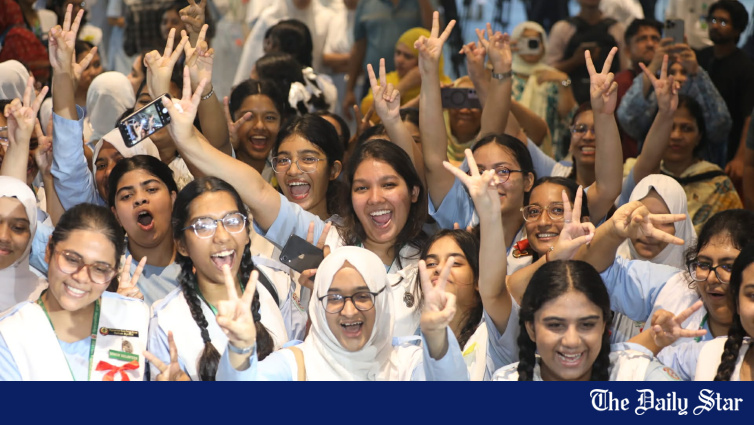

Why girls continue to outpace boys in SSC results
Differences in school attendance, child labour, stipend incentives and study routines are widening the performance gap between male and female students in the Secondary School Certificate (SSC) and equivalent examinations, according to educationists, teachers and candidates.
Read story →